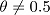
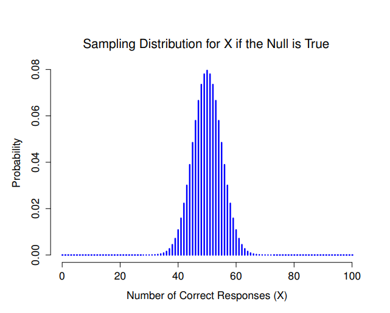
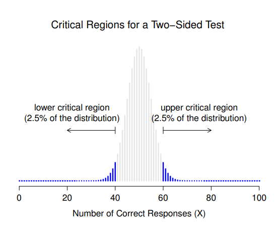
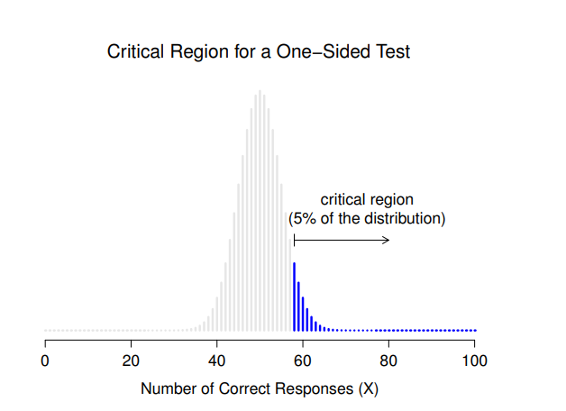
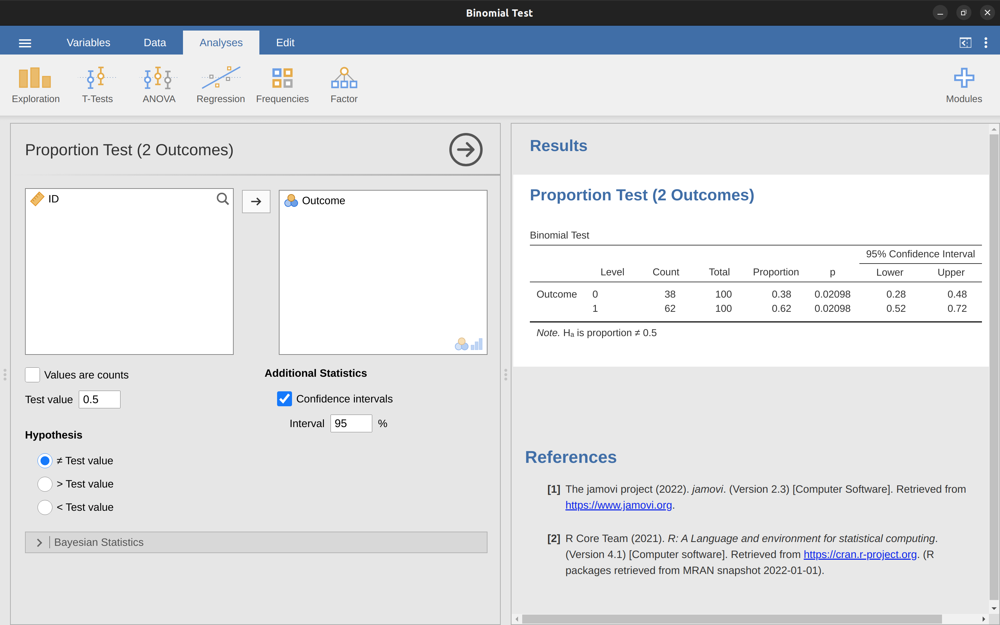
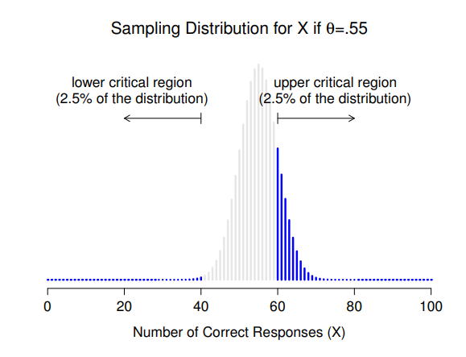
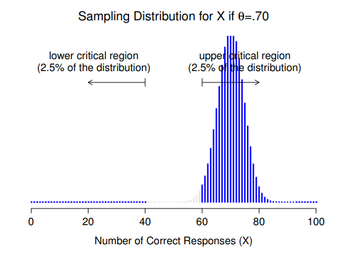
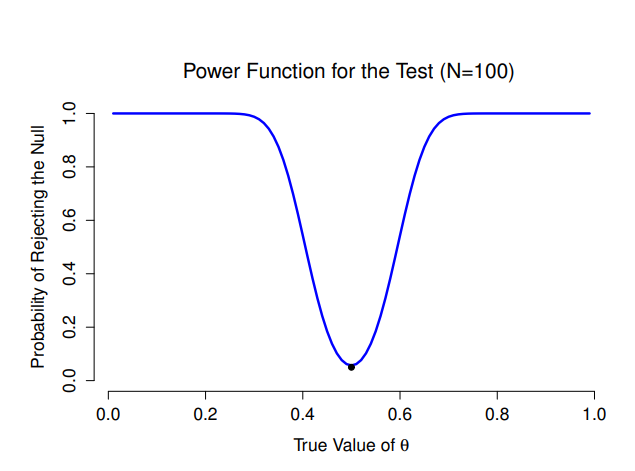
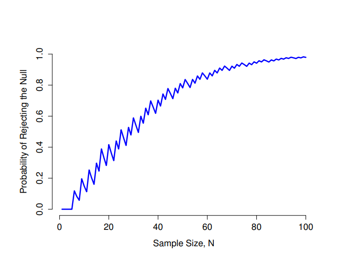

| 研究假設 | 人類有超感官知覺 |
|---|---|
| 統計假設 |  |
9 假設檢定
歸納的過程就是假設一個能夠與我們的經驗調和的最簡單的法則。這個過程沒有邏輯基礎，只有心理基礎。很明顯，並沒有理由相信最簡單的事情就一定會發生。認為明天太陽會升起只是一個假說，這意味著我們不知道太陽是否會升起。 –路德維希·維根斯坦 1
前一章我們學習了推論統計的兩個“大主題”之一——估計。這一章要學習另一個大主題——假設檢定。從最抽象的角度來看，假設檢定實際上是一個非常簡單的概念。研究人員對世界有一些理論，想要確定數據是否真正支持這些理論。然而，細節非常麻煩，多數學生會發現假設檢定的理論是統計學中最令人沮喪的部分。這一章的結構如下。首先，我將詳細描述假設檢定的運作過程，我會使用一個簡單的範例來展示如何”建立”假設檢定。在這個過程中，我會盡量避免過於教條主義，並專注於解釋檢定程序的基本邏輯。2之後，我會花一些時間談論各種環繞假設檢定理論的教條、規則和異端邪說。
9.1 假設的層次
我們從一個原作者虛構的狂想開始談吧：我認為每個人活得夠老，都會向瘋狂的想法屈服。我這輩子真正想做的研究，將在我升任正教授的那一天開始，因為我在象牙塔中會受到終身職的保障，那天我總算能夠拋棄理智，完全投入那個最沒有成效的心理研究領域：證實人類有超感官知覺（ESP）。3
假如這一天終於來臨了，我要做的第一項研究是一項簡單的透視力測試實驗。每個參與者坐在桌子前，由實驗者向他展示一張卡片。這張卡片的一面是黑色的，另一面是白色的。實驗者把卡片放在桌子上，接著帶領參與者到隔壁房間。在實驗者與參與者離開後，第二位實驗者會隨機地把卡片翻到黑面或白面朝上，然後第二位實驗者到隔壁房間，詢問參與者現在卡片的那一面朝上。這個實驗的參與者只會進行一次測試，每個人只會看到一張卡片，只回答一個問題，而參與者在回答問題前都不會與知道正確答案的第二位實驗者接觸。因此，我的資料紀錄非常簡單：我問了N個人的問題，其中有 \(X\) 個人給了正確的答案。為了具體說明，若是這次實驗我測試了100個人，其中有62個人回答正確。這會是一個令人驚訝的大數字，但是這個數字是否足夠讓我聲稱發現了ESP的證據呢？這就是檢驗假設有無效用的情況。然而，在我們談論如何檢驗假設之前，我們需要明白要如何設定這項實驗的假設。
9.1.1 研究假設還是統計假設
首先需要清楚區別的是研究假設和統計假設之間的差別。在我設想的ESP研究中，我的整體科學目標是證實人類有透視能力。在這樣的場景，我有一個清晰的研究目標：我希望發現ESP的證據。在其他場景，我的想法可能會比較中立，也就是我可能會說我的研究目標是確定人類是否有透視能力。無論如何描述我的目標，我想傳達給各位同學的基本觀點是，制定研究假設是提出一個實際的、可測試的科學主張。如果你是一名心理學家，那麼你的研究假設基本上是關於心理學構念的。以下任何一種案例都可說是研究假設：
- 聆聽音樂會降低你對其他事物的注意力能力。這是一種關於兩個有心理學意義的構念之間有因果關係的主張（聆聽音樂和注意力），因此這是一個非常合理的研究假設。
- 智力與個性有關。和前一個一樣，這個假設主張兩個有心理學意義的構念之間存在關係性（智力和個性），但這個主張立埸比較弱：探討相關性而不是因果關係。
- 智力是訊息處理速度。這個假設與前面兩個很不一樣。實際上這並不是一個因果關係或關聯性的假設，而是關於智力基本特性的本體論主張（我相當確定是這樣的）。通常來說，設計實驗測試像是“\(X\)是否影響\(Y\)？”，比回答“\(X\)是什麼？”這樣的問題要容易得多。在實際情況通常是你會找到方法，測試基本特性所形成的關聯性假設。例如，如果我相信智力的本質是大腦中訊息處理速度，我就會設計實驗探討智力和訊息處理之間的關係。因此，大多數日常生活中想到的研究問題雖然都與本質有關，但是通常是基於好奇關於自然界本體論問題的更深層動機。
請注意在真實的實驗室，我會設定幾個互相重疊的研究假設。儘管我設計ESP實驗的終極目標是測試“人類有ESP”這樣的本體論主張，但是實際操作會限制自己只測試目標更狹窄的假設，像是“某些人可以用透視‘看見’物體”。話雖如此，有一些看似目標明確的主張，在任何意義上都不算是合適的研究假設：
- 愛情就像戰場。這個假設過於模糊，無法進行測試。雖然研究假設可以有一定程度的模糊性，但是必須能夠將理論觀念具體化。也許我不夠有創造力，想不到能將這個假設轉化為具體研究設計的方式。如果真的有辦法，那麼應該不是科學的研究假設，而是一首流行歌曲。這並不是說這樣的假設不有趣，而是要指出許多人能想到的深刻問題都是屬於這種類別。也許有一天科學家能夠構建關於愛情的可測試理論，或者測試上帝是否存在等等。但是現在的我們還做不到，我不會指望看到一個令人滿意的科學方法來解決這些問題。
- 套套邏輯俱樂部的第一條規則就是套套邏輯俱樂部的第一條規則。這是不具備任何實質意義的主張，儘管形式上是符合邏輯的。因為在任何自然狀態都不能提出與此主張相反的看法，我們會說這是一個不可證偽的假設，因此這樣的主張不屬於科學研究的領域。在科學研究，無論你想研究的問題是什麼，你提出的主張都必須有可能是錯誤的。
- 在我的實驗裡，較多的參與者會說‘是’，而不是‘否’。這並不是一個有意義的研究假設，因為重點的是資料本身而非心理學問題（當然，除非真正要研究的問題是關於多數人是不是有回答“是”的偏好！）。實際上，這個假設看起來更像是一個統計假設而非研究假設。
正如同學所見，有的研究假設的主張可能會有些混亂，不過都是各樣科學主張的一種。統計假設則不是一種主張。統計假設必須具有數學精確性，並且必須對資料的生成機制（也就是“母群”）的特徵提出具體的條件。即便如此，統計假設的內在意圖必須有與真正的研究假設有一個明確的關係！例如，在我的ESP研究中，我的研究假設是有些人能夠透視牆壁看到隔壁的物體。我要做的是將這樣的研究假設對應到產生資料的方法陳述。因此，現在我們考慮一下要如何表達這樣的陳述。我感興趣的實驗數值是 \(P(correct)\)，也就是實驗參與者正確回答問題的理論上為真但未知之機率。讓我們使用希臘字母\(\theta\)（theta）來表示這項機率。以下是四種不同的統計假設：
- 如果ESP不存在，而我的實驗設計沒有偏誤，那麼參與者的回答只是猜測。因此，我應該期望有一半參與者的回答是正確的，所以我的統計假設是，回答正確的理論機率是 \(\theta=0.5\)。
- 或者，假設ESP存在並且參與者真的能夠看到卡片。如果實驗結果真的是這樣，參與者回答的正確率會高於只是猜測，所以統計假設是 \(\theta > 0.5\)。
- 第三種可能是ESP確實存在，但是參與者並沒有意識到透視看到的物體顏色是相反的（好吧，這有些荒謬，但我們永遠無法知道）。如果是這樣的實驗結果，我會期望參與者回答的正確率會低於只是猜測。所以統計假設是 \(\theta < 0.5\)。
- 最後，如果人類確實有ESP，但是我不知道參與者是否看到了正確的顏色。在這種情況下，我只能期望參與者回答的正確率不等於0.5。所以統計假設是 \(\theta \neq 0.5\)。
以上例子都是合乎科學研究目標的統計假設，因為每條陳述都有定義母群參數，並且緊密扣連我的實驗目的。
我希望這些例子可以讓同學清楚了解，當研究者要構建一個統計假設檢定程序時，實際上要考慮兩種不同層次的假設。首先，研究者要有一個研究假設（關於心理學的主張），能對應到一個統計假設（關於數據生成母群的主張）。以我的ESP實驗來說，會像 表格 9.1 的表達。
小結一下兩種假設的差別。統計假設檢定的測試對象是統計假設，而非研究假設。假如你的研究設計不良，會造成研究假設和統計假設之間的斷裂。舉個有點荒謬的狀況，要是我的ESP研究是在參與者可以從窗戶反光看到卡片的環境裡進行，那麼我肯定能得到非常強的證據證明 \(\theta \neq 0.5\)，但是這並不能告訴我們”人類真的有ESP”。
9.1.2 虛無假設與對立假設
到目前為止還算順利。我有一個研究假設，對應我想相信的世界，還有映射到一個對應於資料生成方式的統計假設。接下來我要創造一個新的統計假設（“虛無假設”，\(H_0\)），這對很多人來說有些違反直覺。因為”虛無假設”對應與我想相信的事情完全相反，然後專注於驗證這條統計假設，並且忽略實際關心的事情（現在被稱為”對立假設”，\(H_1\)）。在我的ESP研究裡，虛無假設是 \(\theta = 0.5\)，因為如果人類沒有ESP，我會期望看到這個結果。當然，我期望ESP是真的，所以這個虛無假設對立的假設就是 \(\theta \neq 0.5\)。實際上，我們是在將 \(\theta\) 涵括的可能數值分成兩類：我真心期望不是真的那些數值（虛無假設），以及如果ESP被證實是存在的，我會很高興的那些數值（對立假設）。完成這些設定之後，需要意識到的關鍵是，假設檢定的真正目標不是證實對立假設（可能）是真的，而是證實虛無假設（可能）是假的。很多初學的同學會覺得這樣的邏輯很奇怪。
就我的學習經驗，最好的比喻是把假設檢定當作刑事法庭審判4。虛無假設就是被告，研究者就像檢察官，統計檢定程序是法官。像真正的刑事審判程序一樣，一開始我們要以無罪推定原則看待虛無假設，也就是說它的主張應被認為是真實的，直到位研究者能夠明確證實它的主張是錯的。研究者可以憑自由意志設計實驗（當然也要合理），目的就是要用可能性最大的資料證實虛無假設是錯的。然而，統計檢定(法官)設定了審判的規則，而這些規則是為了保護虛無假設而設計的，這些規則是要確保如果虛無假設的主張確實是真的，讓法官誤判的機會保持在很低的水準。這非常重要，畢竟虛無假設沒有律師幫忙辨護，而研究者卻在拼命地嘗試證實它的主張是錯的，所以必須有一方提供虛無假設一些保護。
9.2 兩種決策失誤
在深入了解如何設定統計檢定程序之前，理解其哲學基礎是很有幫助的。我(原作者)曾經提過，虛無假設檢定和法庭審判之間的相似之處，不過現在要說得更清楚。最理想情況，我們希望每個檢定的結果都不會出錯。不幸的是，由於現實世界太複雜了，這是不可能達成的理想。有時候只是運氣不好，例如像是你測試擲一枚硬幣是否符合隨機，但是連續擲了10次，每次都是正面朝上。這似乎是表明硬幣不夠隨機的有力證據。然而，即使硬幣是完全公平的，出現這種結果的機率是1/1024。換句話說，在現實生活中，我們必須接受假設檢定出錯的可能性。因此，統計假設檢定的目標不是消除錯誤，而是儘可能減低錯誤的機率。
說到這裡，我們需要更精確地定義什麼是「錯誤」。首先要知道虛無假設最後會被判定為真或為假，會發生什麼狀況。也就是根據檢定，我們會保留或拒絕虛無假設5。如同 表格 9.2 所示，在我們進行檢定並做出選擇後，可能會發生的四種狀況：
| retain \( H_0 \) | reject \( H_0 \) | |
| \( H_0 \) is true | correct decision | error (type I) |
| \( H_0 \) is false | error (type II) | correct decision |
我們看到實際上有兩種不同的錯誤類型。如果我們拒絕了實際為真的虛無假設，那麼我們就是犯了型一錯誤。另一方面，當虛無假設實際上是錯的，我們仍然保留它，那麼我們就犯了型二錯誤。
還記得我之前說過統計檢定有點像法庭審判嗎？我這樣說是認真的。要認定被告有罪，審判長會要求你要提出「超越合理的懷疑」。所有關於證據的法律規定（至少在理論上），都是確保幾乎沒有人能錯誤地判定一個無辜的被告有罪。審判標準如此嚴格的目的是保護被告的權利，英國法官威廉·布萊克斯通曾說過「與其冤枉一個無辜的人，不如放過十個有罪的人。」換句話說，法庭裡審判長不會等價看待兩種類型的錯誤。因為冤枉無辜者的代價遠高於讓罪犯逍遙法外的代價。統計檢定基本上也是這樣。可靠的假設檢定最重要設計原則是控制「型一錯誤」的發生機率，講求控制在某個固定機率以下。這個機率通常以 \(\alpha\) 表示，稱為檢定的顯著水準。我再強調一次，因為這是整個設計的核心，如果「型一錯誤率」不大於 \(\alpha\)，那麼假設檢定的顯著水準就是 \(\alpha\)。
那麼要怎麼處理型二錯誤率呢？我們也希望能控制在一定範圍內，通常用 \(\beta\) 來表示型二錯誤的發生機率。不過更常見做法的是估計檢定力，也就是虛無假設為假時，拒絕虛無假設的機率，這個機率是 \(1 - \beta\)。為了更好地理解，我們將 表格 9.2 改寫一下，並加入相關數字（見 表格 9.3）：
| retain \( H_0 \) | reject \( H_0 \) | |
| \( H_0 \) is true | 1-\( \alpha \) (probability of correct retention) | \(\alpha\) (type I error rate) |
| \( H_0 \) is false | \(\beta\) (type II error rate) | \(1 - \beta\) (power of the test) |
一個「有力」的假設檢定是指保持最小 \(\beta\) 值，同時保持 \(\alpha\) 在預期的水準。依照領域慣例，科學家通常會使用三種 \(\alpha\) 水準：\(0.05\)、\(0.01\) 和 \(0.001\)。值得注意的是，兩者的控制強度有一種不對稱性：檢定的目的是確保 \(\alpha\) 值如同預期的小，但是對於 \(\beta\) 則不預其能控制到相應的水準。當然，我們也希望型二錯誤率能夠保持最小，並設計一些測試來實現，但這方面的控制需求通常不如型一錯誤率的迫切。倘若把布萊克斯通 的話換成統計學家的說法，那就是說“保留十個結論錯誤的虛無假設，總比拒絕一個真實的假設要好”。老實說，我不完全同意這種哲學觀點。在某些情況下，我認為這種觀點是有道理的，其他情況則不然。但是這不是重點，重點是這就是假設檢定的設計原則。
9.3 運用取樣分佈檢測統計值
現在我們可以開始討論如何建立一個假設檢定的具體步驟，讓我們回到一開始提的靈異感知（ESP）研究題目。暫時不管我們實際獲得的資料，先專注於實驗設計。無論資料裡的數值是什麼，都是表示 \(N\) 個人當中有 \(X\) 個人正確地辨認出隱藏卡牌的顏色。此外，若是虛無假設（null hypothesis）確實是真的，也就是說靈異感知不存在，每個人正確辨認出卡牌顏色的真實機率 \(\theta\) 等於 \(0.5\)。在這種狀況，我們預期的資料是什麼樣子呢？很明顯，我們期望作出正確反應的人數比例接近 \(50%\)。換言之，我們可以用更數學式的語言表達 \(\frac{X}{N}\) 大約等於 \(0.5\)。當然，我們不會預期真實的比例完全等於 \(0.5\)。例如，如果我們測試了 \(N=100\) 個人，其中有 \(X=53\) 人回答正確，我們也許不得不承認這筆資料與虛無假設是相當一致的。另一方面，如果有 \(X=99\) 個參與者回答正確，我們會非常有信心地認為虛無假設是錯的。同樣地，如果只有 \(X=3\) 人回答正確，我們也會非常有信心地認為虛無假設是錯的。現在讓我們用更專業的方式描述這些推論：我們有一個數值 \(X\) ，可以通過觀察資料計算出來。評估 \(X\) 之後，我們就必須決定是相信虛無假設，還是拒絕虛無假設並接受另一種假設。用來幫助我們作出決策的數值就稱為統計檢定值。
選定了一個統計檢定值後，下一步是正式宣告那些統計值將導致我們拒絕虛無假設，那些統計值將導致我們接受虛無假設。為了做出決策，我們需要確定當實際結果符合虛無假設時，統計值的取樣分佈是什麼（不大記得的話，可以回到 章节 8.3.1 復習）。為什麼我們需要設定取樣分佈？因為這能告訴我們，如果虛無假設是正確的，我們可以預期會得到那些 \(X\) 的數值。因此，我們可以使用這個分佈作為評估虛無假設與我們的資料是否一致的工具。
如何確定統計值的取樣分佈呢？對於大多數假設檢定程序來說，這個步驟通常相當複雜，甚至有些假設檢定原作者和譯者自己都不是很懂，稍後在本書中同學們會看到某些檢定程序的介紹會有些含糊其辭。不過在某些檢定程序，設定取樣分佈是非常簡單的。ESP研究案例所使用的檢定程序，剛好是最簡單的一種。這個案例的母群參數 \(\theta\) 就是參與者們回答問題時的總機率，而統計值 \(X\) 就等於所有參與者人數 \(N\) 裡正確回答的人數。我們之前在 章节 7.4 這一節裡已經見過「二項分佈」，ESP案例的取樣分佈性質正好符合二項分佈！因此，為了使用二項分佈的符號和術語，我們會說虛無假設預測 \(X\) 的分佈是二項分佈，數學式就寫作
\[X \sim Binomial(\theta,N)\]
既然虛無假設主張 \(\theta = 0.5\)，而我們的實驗有 \(N=100\) 位參與者 ，所以我們已經擁有所需要的取樣分佈。這個取樣分佈的視覺化如同 图 9.1 。沒有什麼特別的，由視覺化繪圖可知，既然虛無假設說 \(X=50\) 是最有可能的結果，那麼我們有很大的機會看到 \(40\) 到 \(60\) 個正確的回答。

9.4 統計推論的決策要素
我們已經非常接近最後一步了。前一步設定了一個統計檢定值 \((X)\)，並且選擇了我們相當有信心的檢定值數值。如果 \(X\) 接近 \(\frac{N}{2}\)，我們應該保留虛無假設，否則我們就應該拒絕虛無假設。剩下的問題是什麼呢？確切地說，我們應該設定那些統計檢定值是對應虛無假設，那些統計檢定值對應對立假設？以ESP研究案為例，假如我觀察到一個值 \(X=62\)。我應該做出什麼決策呢？我應該相信虛無假設還是對立假設？
9.4.1 棄卻域與臨界值
要回答這個問題，我需要向各位介紹統計檢定值 \(X\) 的棄卻域（critical region）。檢定的棄卻域對應那些會讓我們拒絕虛無假設的 \(X\) 數值集合（這就是為什麼棄卻域有時也被稱為拒絕域）。我們如何找到這個棄卻域呢？嗯，讓我們想一想已知的條件：
- 為了拒絕虛無假設，\(X\) 應該非常大或非常小
- 如果虛無假設為真，\(X\) 的取樣分佈會是 \(Binomial(0.5, N)\)
- 如果 \(\alpha = .05\)，則棄卻域必須包含這個取樣分佈的 5%。
最後一點非常重要。棄卻域的範圍是指那些會導致我們拒絕虛無假設的 \(X\) 數值範圍，而這個範圍是經由取樣分佈代換後的機率質量所決定的。如果我們選擇了一個其涵蓋 \(20%\) 機率質量的棄卻域，且虛無假設是符合事實的，那麼拒絕虛無假設的錯誤機率就是 \(20%\)。換言之，我們完成了一個顯著水準為 \(0.2\) 的檢驗。如果我們要求顯著水準是 \(\alpha = .05\)，那麼棄卻域只能涵蓋統計檢定量取樣分佈的 \(5%\) 機率質量。
我們在此總結解決完成假設檢定程序的三個要點。我們的棄卻域包括了機率分佈的最極端數值，也就是機率分佈的尾部。 图 9.2 展示了這個概念的視覺化。如果我們希望 \(\alpha = .05\)，那麼對應的棄卻域是 \(X \leq 40\) 和 \(X \geq 60\)。6也就是說，如果回答正確的人數在 41 到 59 之間，那麼我們應該保留虛無假設。如果回答正確的人數在 0 到 40 或 60 到 100 之間，那麼我們就應該拒絕虛無假設。數字 40 和 60 通常被稱為臨界值(critical values)，因為這些數值定義了棄卻域的邊界。

最後，總結一下完成假設檢定的主要步驟：
- 選擇一個顯著水準 (例如，\(\alpha = .05\))；
- 選擇一個適當的統計檢定值 (例如，\(X\))，並且設定有比較意義的\(H_0\)和\(H_1\);
- 假設虛無假設是符合事實的，找出該統計檢定值的取樣分佈（在ESP案例為二項分佈）；
- 計算會產生符合 \(\alpha\) 的棄卻域（0-40和60-100）。
現在我們所要做的就是用實際資料計算統計檢定值（例如 \(X=62\)），然後比較檢定值與臨界值做出決策。由於 \(62\) 大於臨界值 \(60\)，我們可以拒絕虛無假設。也可以說，我們根據檢定結果得到一個在統計顯著的結論。
9.4.2 小心使用統計“顯著”
統計學和其他占卜術一樣，擁有一套專門術語，故意設計成讓非專業人員無法從字面理解術語的意思。 – G. O. Ashley 7
在此需要講個關於 “significant”(常見中文說法“顯著”) 這個詞怎麼來的題外話。“significant” 在統計學中的概念其實很簡單，但這樣的命名並不夠好。如果實際資料能讓我們拒絕虛無假設，我們會說 “the result is statistically significant”(常見中文說法”結果有統計顯著性”)，通常簡單寫成 “the result is significant”(常見中文說法”有顯著結果”)。這個英文詞彙其實由來已久，來源可以追溯到 “significant” 的意思只是表達 “indicated”(已確認)的時代，並沒有現代英語的 “重要” 之類的含義。因此，今天許多讀者在開始學習統計學時會感到非常困惑，因為他們認為 “significant result” 必定是一個重要的結果。實際上，這並不是最早統計學家開始使用這個詞的意思。所有用”statistically significant”表達的主張， 只是表示資料允許我們拒絕一個虛無假設。至於結果是不是真的重要，則是另一個完全不同的問題，並且有其他各種因素的影響。
9.4.3 單側與雙側檢定的不同
還有一件事情要提醒各位同學，就是虛無假設與對立假設的設定方式。假如前面我所使用的統計假設是：\[H_0: \theta=0.5\] \[H_1:\theta \neq 0.5\] 我們會發現對立假設涵蓋了 \(\theta < .5\) 和 \(\theta > .5\) 這兩種可能的數值集合。這代表我認為超感官知覺可能造成優於純粹猜測的表現，也可能產生比純粹猜測還差的表現（有些人就是會這麼認為），那麼這樣的設定是有意義的。在統計學的語彙庫，這稱為雙側檢定(two-sided test)。這是因為對立假設涵蓋了 無假設兩側的數值集合，因此檢定的棄卻域覆蓋取樣分佈的兩側尾部（如果 \(\alpha = .05\)，則每側尾部佔取樣分佈的2.5％），如同 图 9.2 的展示。不過，這不是唯一的可能結果。如果我只在乎超感官知覺能夠產生優於純粹猜測的表現時，才願意相信這是事實，那麼對立假設就只會涵蓋 \(\theta > .5\) 的數值集合。因此，虛無假設和對立假設就會變成\[H_0: \theta \leq 0.5\] \[H_1: \theta > 0.5\] 這種檢定條件 就是所謂的單側檢定(one-sided test)，此時檢定的棄卻域只有覆蓋取樣分佈的右側尾部，如同 图 9.3 的展示。

9.5 統計檢定的p值
在某種意義上，我們已經完成假設檢定程序。我們已經建立一個統計檢定值，設定好如果虛無假設符合事實的取樣分佈，並為檢定結果決策設定棄卻域。然而，其實我還省略了一個最重要的數值 – p值。p 值有兩種不同的解釋版本，一種是由羅納德·費雪爵士(Sir Ronald Fisher)提出，另一種是由傑茲·尼曼 (Jerzy Neyman) 提出。兩種版本都是統計學家接受的解釋方法，雖然彼此反映非常不同的假設檢定思維途徑。大多數統計學教課書只會講費雪的版本，但我認為這有點可惜。我認為尼曼的版本更簡潔，更能反映虛無假設檢定的邏輯。當然，也許讀者會有不同意見，以下兩種版本都會介紹。我先從尼曼的版本開始說。
9.5.1 運用p值做決策的簡單理由
前面描述的假設檢定程序有一個問題，就是並沒有區分“剛好顯著”和“非常顯著”的結果。像是在我的ESP研究案例裡，所獲得的資料只是剛好落在棄卻域的邊緣，讓我我確實得到了一個顯著結果，但這個結論其實非常微妙。若是我另外進行了一項研究，\(N=100\) 參與者中有 \(X=97\) 人回答正確，顯然這個結果也是顯著的，但是顯著性的程度要大得多，沒有任何模糊空間。前面描述的程序都沒有區分這兩種情況，若是我採用慣例做法，只以 \(\alpha=.05\) 做為我可以接受的型一錯誤率，那麼這兩個結果都是顯著的。
這裡就是p值派上用場的地方了。為了容易理解其中的原理，讓我們想像對同一組資料做了好幾次假設檢定，但是每次設定不一樣的顯著水準 \(\alpha\) 。對我所得到的 ESP 資料( \(X=62\) )進行好幾次檢定後，得到的結論大致如 表格 9.4 。
| α值 | X0.05 | X0.04 | X0.03 | X0.02 | X0.01 |
|---|---|---|---|---|---|
| 是否拒絕虛無假設 | 是 | 是 | 是 | 否 | 否 |
對我的ESP資料（100次觀察中有62次成功）進行幾次檢定後，以\(\alpha=.03\)及以上的顯著水準決策，都是會拒絕虛無假設。以\(\alpha=.02\)及以下的水準，都是是會保留虛無假設。因此，在\(.02\)和\(.03\)之間必定有一個最小的\(\alpha\)值，讓我們可以拒絕虛無假設，這個值就是p值。最後我得到這筆ESP資料的p值為\(.021\)。簡而言之，p值被定義為如果你想要拒絕虛無假設的話，你必須願意容忍的最小型一錯誤率(\(\alpha\))。
如果p值顯示的決策錯誤率是大到你無法接受，那麼你必須保留虛無假設。如果你對等於p值的決策錯誤率感到滿意，那麼你可以拒絕虛無假設並支持偏好的對立假設。
總而言之，p值是對以所有可能的顯著水準\(\alpha\)，所執行的假設檢定結果總結。因此p值有”軟化”決策難度的效果。檢定結果的p值比 \(\alpha\) 大的話，我們會拒絕虛無假設；而檢定結果的p值比 \(\alpha\) 小的話，我們會保留虛無假設。由於我的 ESP 實驗結果是 \(X = 62\)，因此 p = .021，要宣稱人類有ESP的話，我必須容忍 \(2.1%\) 的型一錯誤率。另一方面，若是我的實驗結果是 \(X = 97\)，那麼p值會是多少？這次縮小為 \(p = 1.36 \times 10^{-25}\) 8，這是一個非常、非常微小的型一錯誤率。對於第二個實驗結果，我會更有信心地拒絕虛無假設，因為我只需要 “願意” 容忍大約十分之一兆兆兆兆的型一錯誤率，我的結論會是正確的。
9.5.2 獲得極端資料的機率
第二種p值的定義來自羅納德·費雪爵士，大多數入門統計學的教科書採用這個定義解釋p值。留意一下設定棄卻域時，是不是對應到取樣分佈的尾部，也就是分佈所涵蓋的量數之極端值？這並不是巧合，幾乎所有「好的」檢定都有這種特徵（所謂「好」是指型二錯誤率 \(\beta\) 被最小化）。這是因為好的棄卻域幾乎總是對應到虛無假設成立時最不可能觀察到的統計檢定值。如果這條規則成立，那麼我們可以定義p值是我們會觀察到這個檢定統計值，其極端程度至少達到我們實際上得到該統計值的機率。換句話說，如果根據虛無假設解釋資料的正確性非常的低，那麼虛無假設應該是錯誤的。
9.5.3 常見的錯誤解讀
好了，我們看到了兩種相當不同但是統計學家公認合理的解釋p值的定義，一種基於尼曼對假設檢定的想法，另一種基於費雪的可能性思考。不幸的是，還有第三種解釋，有些學生在初次學習統計學會遇到某些講師這樣介紹，但是完全錯誤的解讀。這種錯誤的定義方法是把p值稱為“虛無假設為真的機率”。這是一種直觀上很容易吸收的想法，但是有兩個關鍵錯誤。首先，虛無假設檢定是一種次數主義工具，而次數主義方法對機率的基本立場是，不允許研究者給虛無假設設定機率分佈。根據這種觀點，虛無假設要麼是真的，要麼不是真的，不可能存在“有\(5%\)的機率是真的”這種說法。其次，即使是貝氏方法這一派，雖然會允許研究者給假設設定機率分佈，p值也不會對應虛無假設為真的機率，這派主張與計算p值的數學原理是完全不一樣的。總之，儘管這種定義方式非常直覺，但是沒有任何公認的學術方法能充分證明p值是某種假設為真的機率。請同學千萬要謹慎分辨。
9.6 假設檢定的報告格式
在假設檢定結果的報告，通常需要報告幾項資訊，各種檢定方法的報告格式也各有特別之處。本書的後半部將介紹如何報告各種的檢定結果（特別詳細的例子請參考 章节 10.1.9 ），讓同學對常用檢定方法的報告格式有所了解。不過，無論是做那一種檢定，都是要報告p值和結果是否有統計顯著性。
報告裡要說明p值是否表示有顯著性，這一點並不令人意外，因為這正是執行假設檢定程序的目的。會讓人意外的是，學術界對於要如何報告假設檢定結果一直存在各種爭議。先不管完全反對在報告中呈現虛無假設檢定結果的聲音，報告確切的p值和僅聲明\(p < \alpha\)（例如，\(p < .05\)），這兩種報告規範一直互相拉鋸。
9.6.1 一些爭議
要了解為什麼有這些爭議，首先要認識報告p值的便利性。在統計實務，只要能夠計算出p值，即使事先沒有指定任何顯著水準 \(\alpha\) ，任何人都可以進行檢定。也就是說，人人可以直接計算p值並直接做解釋。如果今天得到p = .062，這代表著研究者 必須願意容忍 \(6.2%\) 的型一錯誤率，才能證實虛無假設不符合事實。如果研究者無法接受 \(6.2%\) 的型一錯誤率，那麼就要接受虛無假設。因此爭議在於，為什麼不報告實際的p值，讓讀者自己決定什麼樣的型一錯誤率是可以接受的？這種報告方式的優勢在於 “軟化” 決策責任。若是你傾向接受尼曼定義p值的方法，這就是p值的充分意義。我們不必再依賴一個固定的顯著水準，像是 \(\alpha = .05\) ， 做為 “接受” 或 “否決” 之間的明確界線，如此就消除了用 p = .051 和 p = .049等邊緣數值，做為決策依據的詭異問題。
這種解讀的彈性是p值的優勢和劣勢。許多人不喜歡報告精確的p值原因是，研究人員因此有太多解釋的彈性空間。特別是每次查看資料後，p值能讓研究者改變願意容忍多少錯誤率的想法。以我虛構的 ESP 實驗為例，若是我進行了一次實驗，得到了一個\(0.09\)的p值。我應該要接受還是拒絕虛無假設？說實話，我甚至還沒有想到我“真正”願意接受的型一錯誤率。我對方法學的問題沒有意見，但是我對 ESP 是否存在肯定有預先立場，而且我肯定會在乎我的研究是否能夠在一個有影響力的科學期刊上發表。最匪夷所思的是，在我看了初期資料後，開始覺得 \(9%\) 的錯誤率還算可以，特別是與向全世界承認我的實驗失敗的煩惱相比，似乎是幸運的。因此，為了避免看起來像是事後編造，我就在報告裡說我的 \(\alpha\) 是 \(0.1\)，理由是型一錯誤率 \(10%\) 並不算太糟糕，而且以這個條件來說，我的實驗結果是顯著的！我贏了。
換句話說，這個故事情節透露，即使研究者的意圖是好的，態度也夠誠實，有時也很難抵擋在某些方面“淡化”研究難度的誘惑。任何曾經做過實驗的人都知道，這是一個漫長而且困難的過程，你常常會對你的假設情有獨鍾，很難讓人放下，並承認實驗沒有找到你想找到的結果，而這就是決策風險所在。如果我們報告“原始的”p值，每個人會朝他們想要相信的方向來解讀數據，而不是從數據看出事實，如果我們允許這樣做，那為什麼科學家們還要繼續進行科學研究呢？為什麼不讓每個人在任何事情上相信他們喜歡的立場，而不去管事實是什麼？好吧，這麼說有點極端了，但這就是爭議的來源。如果同學同意這樣的觀點，就必須事先指定顯著水準\(\alpha\)，然後只報告檢定結果是否顯著。這是保持誠實的唯一途徑。
| Usual notation | Signif. stars | English translation | The null is... |
| p > .05 | The test wasn't significant | Retained | |
| p < .05 | * | The test was significant at \( \alpha \) = .05 but not at \( \alpha \) = .01 or \( \alpha \) = .001. | Rejected |
| p < .01 | ** | The test was significant at \( \alpha \) = .05 and \( \alpha \) = .01 but not at \( \alpha \) = .001. | Rejected |
| p < .001 | *** | The test was significant at all levels | Rejected |
9.6.2 兩種實務建議
在許多領域的統計實務，研究人員很少只指定一種顯著水準 \(\alpha\) 。很多科學家會根據三種顯著水準做為決策標準：\(.05\)、\(.01\) 和 \(.001\)。結果報告裡要明確指出根據那些顯著水準，能拒絕虛無假設。陳述檢定結果的報告範例整理在 表格 9.5 。這樣可以稍微放開決策規則，因為以符合 \(p < .01\) 的資料做為證據，強度明顯大過 \(p < .05\) 的資料。除此之外，由於這些顯著水準是事先按慣例設定的，可以避免研究人員在查看數據後，才選擇顯著水準 \(\alpha\) 。
儘管如此，許多研究者仍然喜歡報告精確的p值。對許多人來說，讓讀者自行決定如何解讀\(p=0.06\)的好處多過壞處。然而，在許多實務場合，即使是那些偏好報告精確p值的研究人員，通常也只會寫\(p<0.001\)，而不是報告超微小p值的確切數值。這部分是因為許多軟體在p值太小時並不會印出完整數值（例如，SPSS算出\(p<0.001\)的話，只會印出\(p=0.000\)），另一方面，非常小的p值可能會誤導讀者 。人類大腦看到像\(0.0000000001\)這樣的數字時，很難壓抑直覺認為支持對立假設的結果是不可動搖的鐵證。然而，在真實世界，這樣的想法通常是錯誤的。生命是複雜的，每一個被發明出來的統計檢驗方法都是根據簡化的、逼近的和假設的模型。因此，很難抗拒從任何統計分析得到的\(p<0.001\)強烈信心感。換句話說，\(p<0.001\)實際只代表“就這個檢驗方法而言，證據是壓倒性的”。
有鑑於此，同學可能好奇應該要怎麼做。有許多處理這個問題的建議，存在相當多相互矛盾的地方。有些人認為應該報告精確的p值，也有人認為檢定報告應該如同 表格 9.1 ，明確寫出研究假設與統計假設。對此，我能給同學們的最好建議是，大量閱讀你的主修領域已經發表的文獻報告，看看有什麼慣例。如果看不出有什麼一致的報告模式，那麼就使用你偏好的任何方法。
9.7 假設檢定實作須知
介紹到這裡，可能有些同學會想知道ESP研究是一個“真正”的假設檢定，還是只為了教學而編造的虛構範例，其實我們真的可以跑檢定程序。在前面的介紹，我(原作者)根據 章节 9.4 介紹的決策要素設定這個檢定程序，因為我認為這是大家在現實世界裡會遇到的最簡單的研究問題。不過，統計學家早就發明對應這種問題的檢定方法，正式名稱是二項式檢定，並且能用 jamovi 的內建模組”Frequencies”執行，在”Analyses”面板開啟模組選單，選擇“2 Outcomes”就能執行。若是設定虛無假設是回答機率為一半，即 \(p = 0.5\)，9。從示範資料庫裡開啟binomialtest.omv這個檔案，檢驗\(n=100\)位參與者裡 \(x=62\) 位回答正確的資料能拒絕或接受虛無假設，檢定結果如同 图 9.4 。

報表內容對初學的同學來說可能還很陌生，但你應該可以看出一些前面談過，要在報告裡呈現的資訊。最具體的一項是p = 0.02 小於常用的顯著水準 \(\alpha = 0.05\)，因此我們可以拒絕虛無假設。隨著後續章節的學習，同學們會逐漸了解如何閱讀報表內容，希望學過之後，大家會發現報表內容的呈現方式，在閱讀和理解報告的好處。
9.8 效果量、樣本量、考驗力
在前面的章節，我(原作者)一再強調統計假設檢定背後的主要設計原則，那就是要儘可能有效控制型一錯誤率。當我們設定 \(\alpha = .05\) 時，就要嘗試確保虛無假設主張成立的話，最多只有 \(5%\) 的機率被錯誤拒絕。然而，這並不是說我們不用關心型二錯誤。從研究者進行統計實務的角度來看，當虛無假設實際不成立，卻不能拒絕所造成的錯誤非常令人困擾。考慮這一點，假設檢定的次要目標就是要儘可能讓型二錯誤率 \(\beta\) 維持在最低水準，儘管我們通常不會用「最小化型二錯誤」來形容這個目標。相反的，我們常用「最大化考驗力」這樣的描述。因為考驗力的定義是 \(1-\beta\)，所以兩者意思是相同的。
9.8.1 圖解考驗力

讓我們花一點時間來好好理解什麼是型二錯誤。當對立假設成立，但我們仍然無法拒絕虛無假設時，做出的決策錯誤就是型二錯誤(再看一下 表格 9.2 )。較理想的情況是我們可以設定一個代表型二錯誤率的數值 \(\beta\)，就像我們可以將 \(\alpha = .05\) 設定為型一錯誤率一樣。不幸的是，實際的做法非常棘手。仔細看一下ESP 研究案例的對立假設主張，其實對應許多可能的 \(\theta\) 值，只要是除了 0.5 之外，每個 \(\theta\) 值都可以支持對立假設。若是某位參與者 選擇正確答案的真實機率為 55%（也就是 \(\theta = .55\)）。若是如此， \(X\) 的取樣分佈就不是虛無假設所預測的分佈，因為 \(X\) 的最有可能的數值是 \(100\) 次中有 \(55\) 次。不僅如此，整個取樣分佈也偏移了，如同 图 9.5 的展示。當然，棄絕域並不會改變。根據定義，棄卻域是根據虛無假設的主張所設定的。從 图 9.5 看到的是，當虛無假設不成立， \(\theta = .55\) 的取樣分佈內有很高的比例屬於棄卻域。 的確，當虛無假設主張不成立時，拒絕虛無假設的機率相對更大！然而，\(\theta = .55\) 並不是唯一符合對立假設的可能值。現在讓我們看看 \(\theta\) 的真實數值是 \(0.7\)，取樣分佈會變成什麼樣子？如同 图 9.6 的展示，當 \(\theta = 0.7\) 時，幾乎整個取樣分佈都落在棄卻域裡。因此，如果 \(\theta = 0.7\)，我們正確拒絕虛無假設的機率（即檢定力）比 \(\theta = 0.55\) 要大得多。簡而言之，雖然 \(\theta = .55\) 和 \(\theta = .70\) 都是支持對立假設的實驗結果，但型二錯誤率是不相等的。

這樣討論下來，我們知道假設檢定的考驗力（即\(1-\beta\)）取決於 \(\theta\) 的真實數值。為了清楚說明這一點，我已經算出所有 \(\theta\) 值可拒絕虛無假設的預期機率，繪製出 图 9.7 。圖中的曲線通常稱為假設檢定的考驗力函數。這是一個能評估檢定方法品質的好工具，因為函數列出所有可能的 \(\theta\) 值可達到的考驗力（\(1-\beta\)）。正如圖中顯示，當 \(\theta\) 的真實值越接近 \(0.5\) 時，檢定的考驗力會急劇降低，遠離 \(0.5\) 的話，考驗力就越大。

9.8.2 估計考驗力的功用
Since all models are wrong the scientist must be alert to what is importantly wrong. It is inappropriate to be concerned with mice when there are tigers abroad
- George Box (Box 1976, p. 792)
图 9.7 展示了我們能執行假設檢定的最基本條件 。如果實際狀態和虛無假設預測的狀態非常不同，那麼考驗力會非常高；但是如果實際狀態和虛無假設預測的非常相似（但不完全相同），那麼考驗力會非常低。所以，為了能讓科學家們能方便估計考驗力，統計學家發展出一些方法量化實際狀態與虛無假設之間的“相似程度”。這種統計方法就是效果量(effect size)的測量（例如 Cohen (1988); Ellis (2010)）。效果量在不同的研究中的定義可能略有不同（因此，本節僅討論一般性的定義），但是各種定義嘗試捕捉的質性想法始終一致（參考 表格 9.6 ）。其中一種就像本章討論的ESP案例：真實的母群參數數值與虛無假設的參數數值之間差異有多大？如果讓 \(\theta_0 = 0.5\) 表示虛無假設的參數值， \(\theta\) 表示母群參數的真實數值，那麼測量效果量的方式就是計算兩種數值之間的差異（即\(\theta - \theta_0\)），或者數值差異的絕對值，\(abs(\theta - \theta_0)\)。
| X. | 效果量大 | 效果量小 |
|---|---|---|
| 有顯著結果 | 確實發現差異，且有實用意義 | 確實發現差異，但未必有實用意義 |
| 無顯著結果 | 未發現差異 | 未發現差異 |
為什麼要計算效果量？假設你已經進行實驗，收集完資料，進行假設檢定而得到了一個顯著性的結果。那麼你宣稱得到了一個明顯的效果，研究就結束嗎？這不就是假設檢定的功能嗎？當然不完全是。同學們現在應該會同意，進行假設檢定的目的是試圖證明虛無假設是錯誤的，但這並不是我們做研究唯一關注的事情。如果虛無假設主張\(\theta=0.5\)，然後我們證實這是錯誤的，我們只是講完了一半的故事。拒絕虛無假設表示我們相信\(\theta \neq 0.5\)，但是\(\theta=0.51\)和\(\theta=0.8\)之間存在很大的差異。如果實驗結果是\(\theta=0.8\)，那麼虛無假設不僅僅是錯了，還錯得非常離譜。另一方面，若是我們成功地拒絕虛無假設，但是\(\theta\)的真實數值似乎只有0.51（這只有在規模非常大的研究中才可能發生）。這個情況的虛無假設當然是錯的，但是我們並不確定這個結果是否值得注意，因為效果量非常地小。以我創造的ESP研究案例來說，我們可能仍然感到興趣，因為證實人類真的有超能力是相當酷的事10，但是在大多數研究的狀況，即使結果顯示有\(1%\)的顯著差異，就算是真的有差異，通常也不是值得注意的發現。例如，假如我們今天研究了男女高中生的考試成績差異，結果發現女學生的平均成績比男生高\(1%\)。若是我有來自成千上萬名學生的資料，那麼這種差異幾乎肯定是有統計顯著性，但是無論p值有多小，這種差異都沒什麼意思。沒有人敢根據如此微小的差異，宣稱一個國家出現了青少年教育危機吧？正是因為這個原因，越來越多的研究者使用某種效果量的標準尺度，與假設檢定的結果並列報告。假設檢定只有告訴我們，應不應該相信所觀察到的效果是不是真實的（即不僅僅是偶然的），而效果量則透露是不是應該關心這種效果。
9.8.3 增加研究考驗力的方案
毫不意外地，現代科學家非常關心如何最大幅度提高實驗的考驗力。我們都希望實驗能夠成功，因此期望虛無假設不成立的話，能夠最大幅度地增加拒絕的機會（當然，我們通常希望虛無假設是錯誤的！）。正如前一節討論的，影響考驗力的因素之一是效果量。因此，增加考驗力的首選方案就是增加效果量。這表示在研究實務，我們所設計的研究能使效果量放到最大。以ESP研究為例，我也許認為超感官能力在安靜、昏暗的房間裡，且要儘量減少干擾，才能得到最佳實驗效果。因此，我會嘗試在這樣的環境裡進行實驗。如果我的實驗方式確實能增強人類的ESP能力，那麼\(\theta\)的真實數值就會增加11，就能提高效果量。簡而言之，巧妙的實驗設計是提高考驗力的一種方式，因為實驗設計可以改變效果量。
不幸的是，即使擁有最佳的實驗設計，大部分的研究只能得到微小效果。例如，超感官知覺也許確實存在，但是即使在最佳的設計條件測試，效果量也非常微弱。遇到這種情況，增加樣本量是增加考驗力的最佳方案。一般來說，收集越多觀察值，就越有可能區分兩種假設。比如說我找了10位參與者進行超感官知覺實驗，其中7人正確答出隱藏卡片的顏色，這樣的結果可能不會令人印象深刻。但是如果我找了10,000位參與者進行實驗，其中7,000人猜對了，這樣的結果更有可能讓人覺得是件大事。換句話說，樣本量增加，考驗力也會增加。图 9.8 展示了兩者的關係，對於參數真實數值 \(\theta = 0.7\) ，該圖顯示從1到100的所有樣本量\(N\)的檢定力，其中虛無假設預測 \(\theta_0 = 0.5\) 。

因為考驗力很重要，規劃一個實驗的執行細節時，知道可能有多少考驗力會非常有用。當然，因為無法確定真正的效果量有多少，我們無法得知考驗力會有多高，但是有時候我們可以評估考驗力應該要有多大。能做到的話，我們就可以評估需要多大的樣本量！這種方案叫做考驗力分析，做得好的話，對於設計實驗會非常有用。有用的考驗力分析結果包括能成功執行實驗所需要的時間或金錢是否足夠等資訊。現在越來越多的研究者同意，考驗力分析應該成為實驗設計的必要部分，因此值得好好了解如何執行。然而，本書沒有打算介紹考驗力分析。有部分理由是講出來很無聊，還有部分是實質性的理由。無聊的理由是原作者還沒有時間去寫關於考驗力分析的介紹。實質理由是原作者對於考驗力分析的方法還有些懷疑的地方。作為一位研究者，我幾乎沒做過考驗力分析。我認為可能是因為 (a) 我的實驗經常有些非常規條件 ，不曉得如何正確地定義效果量，還有 (b) 我對研究結果的效果量實在是一無所知，不知道如何解釋分析結果。此外，我常與一位擔任統計諮詢師廣泛交流（其實就是我老婆），她實際接過的案子裡，只有要撰寫申請補助經費的計畫書的客戶才會詢問怎麼做考驗力分析。換句話說，在現實的研究場景，科學家們似乎只有被特別要求時才需要進行考驗力分析，而且考驗力分析並不是日常科研工作的一部分。簡而言之，我同意考驗力是一個重要的概念，但是考驗力分析並不像人們所說的那麼有用，除非在少數情況。像是（a）已經有方法能計算你要執行的實驗設計考驗力，（b）你對要測量的效果量可能大小有很好的想法12。也許其他研究者比我幸運，但我個人從未遇到過(a)和(b)都成立的情況。未來我的想法也許會改變，這本書的更新版本就會有章節介紹詳細考驗力分析，但是以目前來說，這是我編寫這個主題最心安理得的處理方式。13
9.9 值得繼續學習的主題
譯者註 20230418初步以ChatGPT-4完成翻譯，內容待編修。
在本章中，我向您描述的是虛無假設顯著性檢驗（NHST）的正統框架。理解NHST如何運作是絕對必要的，因為自20世紀初成為主流以來，它一直是主要的推論統計方法。這是絕大多數在職科學家依賴的數據分析方法，因此即使您討厭它，也需要了解它。然而，這種方法並非沒有問題。框架中存在一些怪異之處，其產生的歷史奇觀，關於框架是否正確的理論爭議，以及對不慎的人來說有很多實際陷阱。我不打算詳細討論這個主題，但我認為簡要討論一下這些問題是值得的。
9.9.1 尼曼與費雪
您首先應該知道的是，正統虛無假設檢定實際上是將羅納德·費雪爵士和傑茲·尼曼提出的兩種相當不同的假設檢定方法混合在一起（有關歷史概要，請參見 Lehmann (2011) ）。歷史很混亂，因為費雪和尼曼是現實生活中的人，他們的觀點會隨著時間而改變，而且他們都沒有提供“如何解釋幾十年後他們的工作的明確說法”。也就是說，這是我對這兩種方法的快速總結。
首先，讓我們談論費雪的方法。據我所知，費雪假設您只有一個假設（虛無假設），您想做的是找出虛無假設是否與數據不一致。從他的角度來看，您應該做的是檢查數據是否根據虛無假設是“足夠不可能”。實際上，如果您回想一下我們之前的討論，這就是費雪如何定義p值的。根據費雪的說法，如果虛無假設對數據的解釋非常差，那麼您可以放心地拒絕它。但是，由於您無法將其與其他假設進行比較，因此無法“接受對立假設”，因為您不一定有一個明確陳述的對立假設。這就是所有的內容。
相比之下，尼曼認為假設檢定的目的是作為行動指南，他的方法比費雪的更正式。他認為，您可以做很多事情（接受虛無假設或接受對立假設），檢驗的目的是告訴您數據支持哪一個。從這個角度來看，確定對立假設至關重要。如果您不知道對立假設是什麼，那麼您就不知道測試的有效性，甚至不知道哪個動作是有意義的。他的框架確實需要不同假設之間的競爭。對於尼曼來說，\(p\)值並未直接衡量在虛無假設下的數據（或更極端的數據）的機率，而更像是一個抽象描述，關於哪些“可能的測試”告訴您接受虛無假設，以及哪些“可能的測試”告訴您接受對立假設。
如您所見，今天的虛無假設檢定是兩者之間的奇怪混合物。我們談論擁有虛無假設和對立假設（尼曼），但通常[^09-hypothesis-testing-13]根據極端數據來定義\(p\)值（費雪），但我們仍然有α值（尼曼）。部分統計檢驗具有明確指定的對立假設（尼曼），但其他則相對含糊（費雪）。至少根據某些人的看法，我們不允許談論接受對立假設（費雪）。假設檢定是至今還是一團混亂的統計學歷史遺產，但我希望這至少能解釋為什麼會這樣。
[^09-hypothesis-testing-13]：儘管這本書描述了尼曼和費雪對\(p\)值的定義，但大多數不會。大多數入門教材只會給你費雪版本。
9.9.2 貝氏統計與次數主義統計
在統計檢定的p值這一節，我強調不能將p值解釋為虛無假設為真的機率。NHST基本上是一個頻率主義工具（參見@sec-Introduction-to-probability），因此它不允許您為假設分配機率。虛無假設要么是對的，要么是錯的。貝氏統計方法將機率解釋為信念程度，因此完全可以說虛無假設為真的機率是\(10\%\)。這只是反映了您對這個假設的信心程度。在頻率主義方法中，您不能這樣做。請記住，如果您是頻率主義者，機率只能根據大量獨立重複實驗（即長期頻率）來定義。如果這是您對機率的解釋，那麼談論“虛無假設的機率”就是完全無意義的：虛無假設要么是對的，要么是錯的。您無法將這個陳述的長期頻率表達出來。談論“虛無假設的機率”就像談論“自由的顏色”一樣無意義。它沒有顏色！
最重要的是，這不僅僅是一個純粹的意識形態問題。如果您決定成為貝氏學派，並且您可以對假設做出機率陳述，那麼您必須遵循貝氏規則來計算這些機率。在 章节 16 中我將進一步談論這個問題，但目前我想指出的是，p值對於\(H_0\)為真的機率是一個糟糕的近似。如果您想知道虛無假設的機率，那麼p值並非您要尋找的東西！
9.9.3 決策陷阱
如您所見，假設檢定背後的理論是一團糟，甚至到現在統計學家們還在爭論它“應該”如何運作。然而，統計學家之間的分歧不是我們真正關心的問題。我們真正關心的是實用數據分析。儘管“正統”的虛無假設顯著性檢驗存在許多缺陷，但即使是像我這樣毫不猶豫的貝氏學者也會同意，如果使用得當，它們是有用的。大多數時候，它們會給出合理的答案，並且您可以用它們來學習有趣的事物。撇開我們已經討論過的各種意識形態和歷史混亂，事實仍然是統計中最大的危險在於不加思考。我不是指愚蠢，而是字面意思上的不加思考。在沒有花時間考慮每個檢驗實際上對數據說了什麼，以及檢查這是否與您的解釋一致的情況下，匆忙地解釋結果。這就是最大的陷阱所在。
舉個例子，考慮以下例子（參見 Gelman & Stern (2006) ）。假設我正在進行ESP研究，並且我已經決定分別為男性參與者和女性參與者分析數據。在男性參與者中，有\(33\)人中的\(50\)人猜對了卡片的顏色。這是一個顯著效應（\(p=.03\)）。在女性參與者中，有\(29\)人中的\(50\)人猜對了。這不是一個顯著效應（\(p=.32\)）。看到這一點，人們極其想知道為什麼男性和女性在通靈能力方面存在差異。然而，這是錯誤的。如果你仔細想想，我們實際上並沒有運行一個明確比較男性和女性的測試。我們所做的一切就是將男性與機會進行比較（二項檢驗顯著）和將女性與機會進行比較（二項檢驗不顯著）。如果我們想要認為男性和女性之間存在實際差異，我們可能應該運行一個虛無假設沒有差異的檢驗！我們可以使用另一種假設檢定14，但是當我們這樣做時，事實證明，我們並沒有證據表明男性和女性之間存在顯著差異（\(p=.54\)）。現在，您是否認為兩組之間存在根本差異？當然不是。這裡發生的情況是，兩組數據（男性和女性）都非常接近邊界。純粹憑機運，其中一組恰好落在\(p=.05\)這條神奇的線上，而另一組則沒有。這並不意味著男性和女性之間存在差異。這個錯誤非常普遍，您應該時刻警惕。顯著與不顯著之間的差異並不能證明存在實際差異。如果您想說兩組之間存在差異，那麼您必須測試該差異！
上面的例子僅僅是一個例子。我將其單獨拿出來，因為它非常常見，但更大的畫面是數據分析可能很難做對。思考您要測試什麼，為什麼要測試它，以及您的測試結果是否可能在現實世界中有意義。
9.10 本章小結
虛無假設檢定是統計理論最普遍的一種應用，科學研究報告結果都會呈現某種假設的檢定。現代科學家幾乎都多少要了解p值的意義，否則不能被認為是合格的科學研究者，所以這一章是本書最重要的部分。以下幫助讀者及學生快速回顧本章重點：
- 假設的層次 研究假設與統計假設。虛無假設與對立假設。
- 兩種決策失誤 型一與型二錯誤15
- 運用取樣分佈檢測統計值.
- 統計推論的決策要素16
- 統計檢定的p值 為何用p值做決策是”模擬兩可”。
- 假設檢定的報告格式
- 假設檢定實作須知17
- 效果量、樣本量、考驗力18
- 一些值得繼續學習的主題
到了本書最後一章 章节 16 ，我們會從貝氏統計觀點回顧統計理論與虛無假設檢定，還有介紹幾套非次數主義取向的統計工具。不過我們先暫別抽象的統計理論，接下來的第五部分將學習實用的統計分析方法。
這段話引自維根斯坦於1922年出版的專書邏輯哲學論。↩︎
技術性註記。這一章的敘述與許多入門教材的常見說明有些微不同。經典的虛無假設檢定理論是20世紀初期，由羅納德·費雪和傑茲·尼曼 兩位統計學者分別發展出來的，但是費雪和尼曼對於理論的運作有非常不同的看法。現今大多數教材所採用的檢定理論是兩種觀點的混合。本書的解說方式較接近尼曼的風格，特別在解釋p值意義的部分。↩︎
在此對真心相信超感官知覺（ESP）存在的朋友說聲抱歉，根據我（原作者）所知道的ESP相關文獻，我認為這種研究是不切實際的。雖然說其中一些研究的設計是嚴謹的，從心理學研究設計的角度來看，這是一個有趣的研究領域。當然，在一個自由國家，只要你願意，你可以花費時間和精力來證實我錯了，但我認為這真的不是一個發揮個人智慧的實在主題。↩︎
這種比喻只適用像英國、美國或澳洲等採用訴訟辯護制度的國家。據原作者所知，法國的審判制度是完全不同的。↩︎
關於描述假設檢定結果會使用的詞彙，有一些需要注意的地方。首先，建議要避免使用「證明」(prove)這個詞。統計檢定不能證明一個假設是真的或假的，因為「證明」暗示絕對的確定性，但是統計學中永遠沒有絕對的確定性。這點幾乎所有懂統計的人都會同意(譯註:本書中文版一律用「證實」)。然而，還有一些讓人混淆的用語。有些人認為，我們只可以說「拒絕虛無假設」、「未能拒絕虛無假設」或「保留虛無假設」。按照這種思路，我們不可以說「接受對立假設」或「接受虛無假設」。對我而言，這樣說法太過嚴格了。我認為這混淆了虛無假設檢定和卡爾·波普認為科學研究是證偽過程的觀點。儘管證偽主義和虛無假設檢定兩者思路有相似之處，但是不完全一樣。雖然就我個人而言，我認為可以談論接受一個假設（「接受」一個假設並不意味著它一定要是真的，特別是虛無假設所主張的情況），不過許多人會持不同意見。更重要的是，同學們應該曉得這些詞彙的特殊使用方式，這樣在寫自己的報告時就不會手足無措了。↩︎
嚴格來說，這裡設定的顯著水準其實是 \(\alpha = .057\)，這有點太寬鬆了。不過，如果是選擇 \(39\) 和 \(61\) 做為臨界值，那麼棄卻域只會涵蓋分佈的 \(3.5%\)。原作者覺得使用 \(40\) 和 \(60\) 作為臨界值更好討論，並願意容忍 \(5.7%\) 的型一錯誤率，因為這是最接近 \(\alpha = .05\) 的整數了。↩︎
原作者在網路找到的資訊都是說這是Ashley說的，但是無法找到可靠的消息來源。↩︎
\(p = .000000000000000000000000136\) 在一般人看來並不是科學的表達方式！↩︎
注意，
Test value要填入的 p 與p值是兩回事。用 jamovi 進行二項式檢定，要先設定 \(p\) 參數代表根據虛無假設猜測正確答案的機率，也就是 \(\theta\) 值。換句話說，這個 \(p\) 是指根據虛無假設，參與者能答對的機率。↩︎請注意，ESP案例的回答正確率我習慣會用p代表，但是這個p與p值無關。在 jamovi 的二項檢定中， 參數\(p\)對應到根據虛無假設所作出的正確反應的機率。換句話說，它是 \(\theta\) 的值。↩︎
請注意，母群參數的真實數值 \(\theta\) 不一定對應自然界中不可改變的事實。在ESP實驗的狀況， \(\theta\) 只是代表參與者正確猜對隔壁房間的卡片顏色機率。所以，各種因素都可以影響母群參數。當然，我們能這樣設計實驗的前提是超感官力量確實存在！↩︎
一個可能的例外是，研究目標是測試一種新式醫療方法的有效性，研究人員能事先指定需要檢測的重要效果量，例如在任何優於現有治療方法的額外效果量。如此做考驗力分析可以獲得一些有關新療法潛在價值的信息。↩︎
譯註~ 譯者認為原作者應該還有另一層考量。由於本書定位是入門教科書，考驗力分析需要進一步學習各種研究方法(也就是 ＠sec-A-brief-introduction-to-research-design 的完整版)，才能充分了解其用途。如果教師想為學生介紹預先註冊(preregisteration)的觀念及做法，可考慮在統計課程介紹考驗力分析的必要性。↩︎
讀完原作者虛構的ESP研究案例，打開示範檔案庫的”Binomial Test”，找一找虛無假設與對立假設、型一與型二錯誤有沒有呈現在jamovi介面的任何地方？有的話是如何呈現？↩︎
如果在 章节 7 有用過distrACTION這個模組認識機率分佈，再次使用這個模組繪製雙側檢定與單側檢定的棄卻域。↩︎
分別以雙側檢定與單側檢定的結果，使用distrACTION模組確認表格內量數之外的累積機率，確認是否與表格裡的p值一致？↩︎
首先定義一個你期望為真的成功率或失敗率，使用distrACTION模組製作一個代表這項機率的二項分佈機率，繪製出雙側與單側考驗力的區域。↩︎